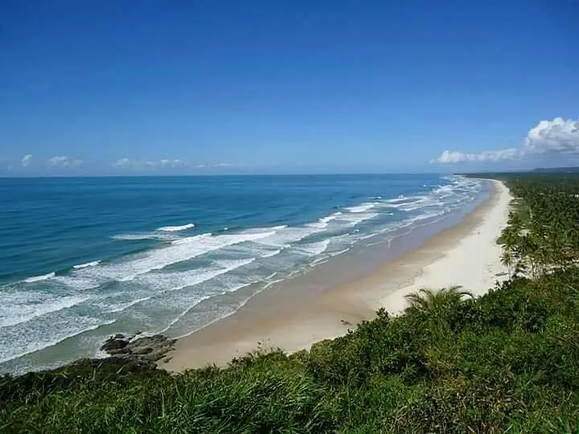
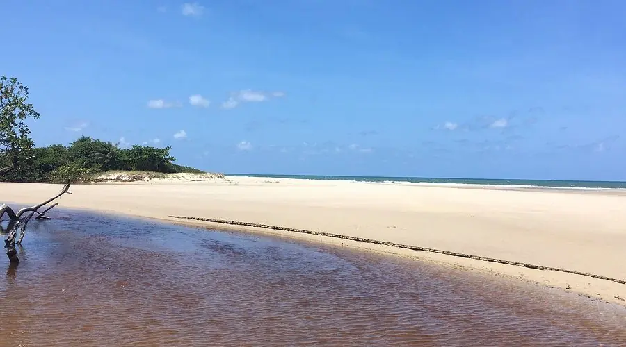
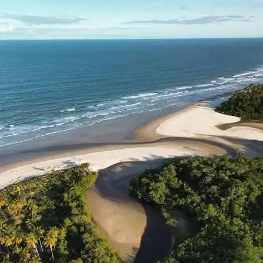
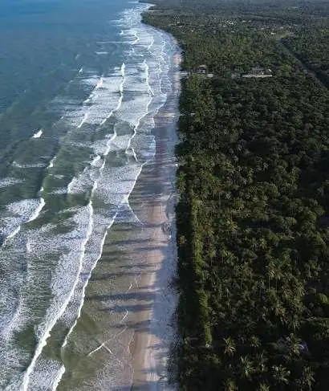
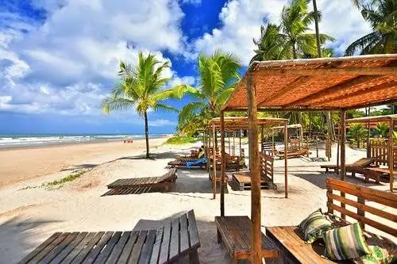
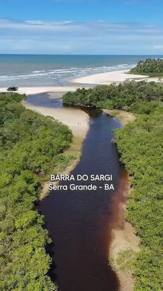

No litoral sul da Bahia, em Serra Grande (distrito de Uruçuca), o Sargi e o Pé de Serra reúnem praias extensas de areia clara, coqueirais e mata atlântica preservada.






Praias longas e abertas, de areia clara e ladeadas por coqueiros e pela mata atlântica, convidam a caminhadas e ao contato com a natureza — um cenário típico do litoral cacaueiro do sul da Bahia.
É onde o Rio Sargi encontra o mar, formando uma barra de águas tranquilas entre a areia e o verde — um dos cartões-postais da região e ponto de encontro de moradores e visitantes.